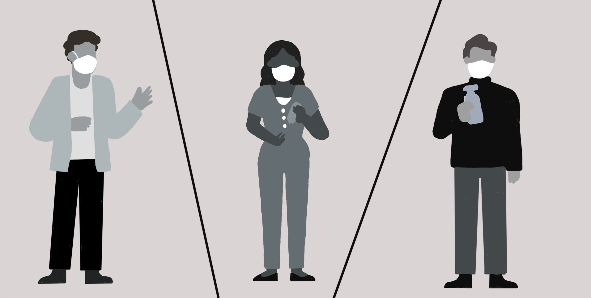
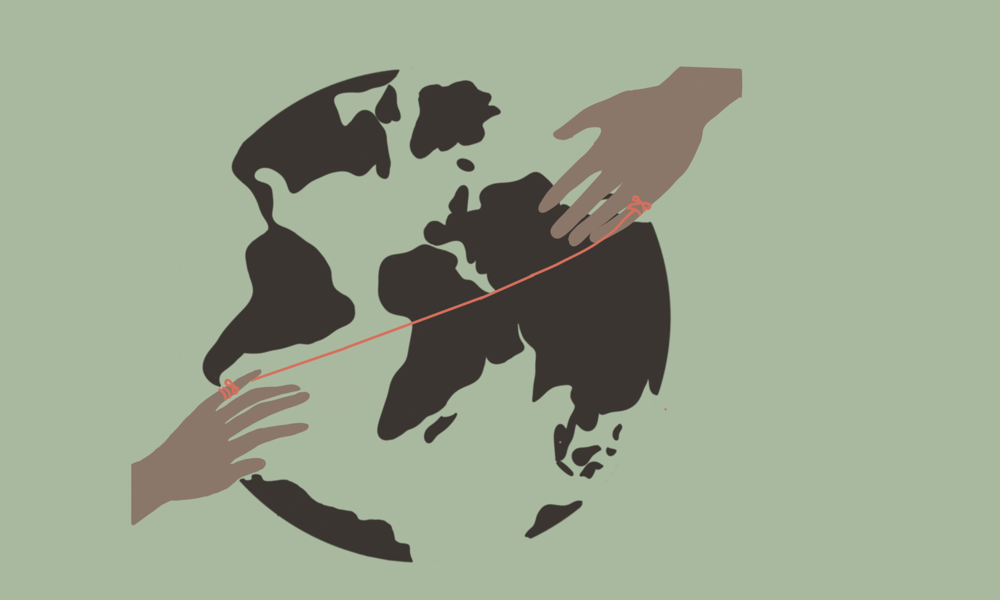
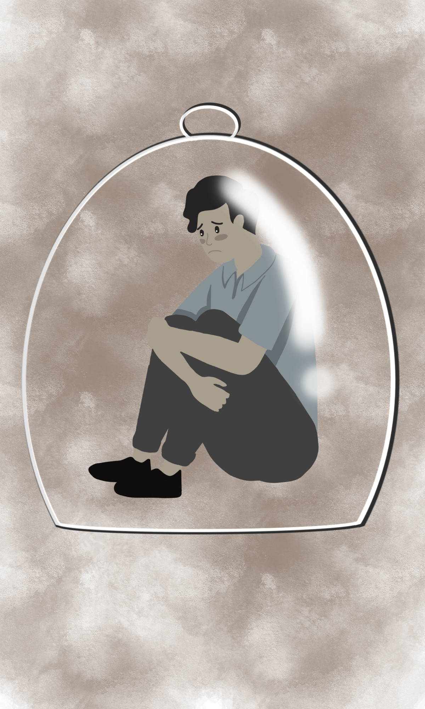
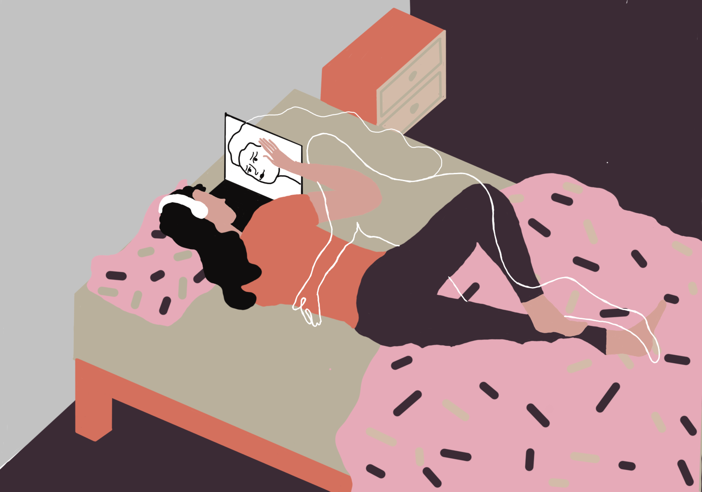

Recent events have been a catalyst of change in many aspects, but especially with our connection to others.

Suddenly, the closeness we took for granted shatters. Its not uncommon to find yourself across the world from those you love and care about.

It can leave us feeling completely isolated. Cut-off. Alone.
Yes, with the current technology at our fingers, its easy to communicate with those distanced from you. Text messages, social media and video calls all exist.

But are they enough? Is staring at a screen to have some connection with a loved one enough to ease the ache? What if there was more?

What if you could use virtual reality to see your loved one up close, communicate with them like they're just meters away from you instead of oceans away? So cose and so real you can almost touch them.